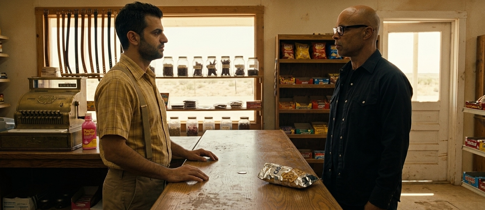
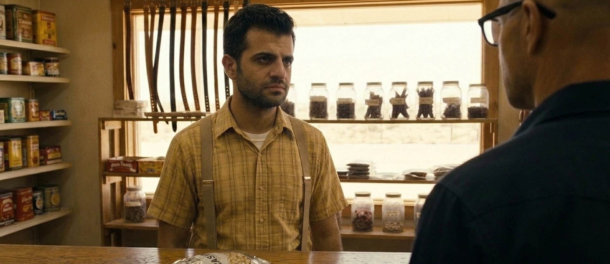
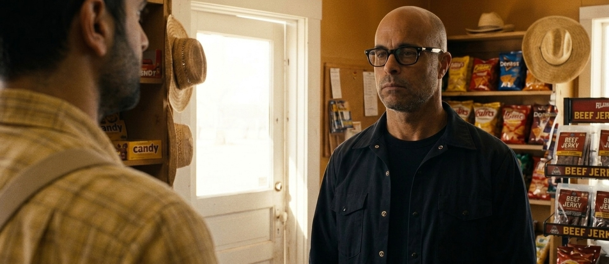
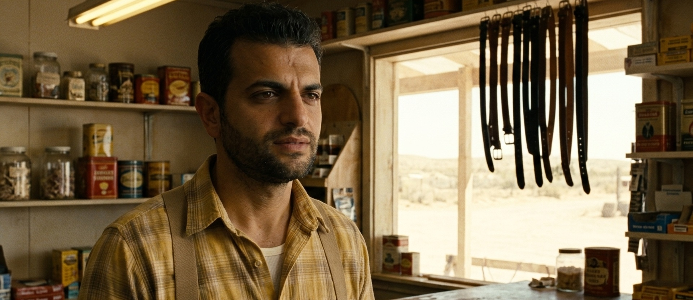
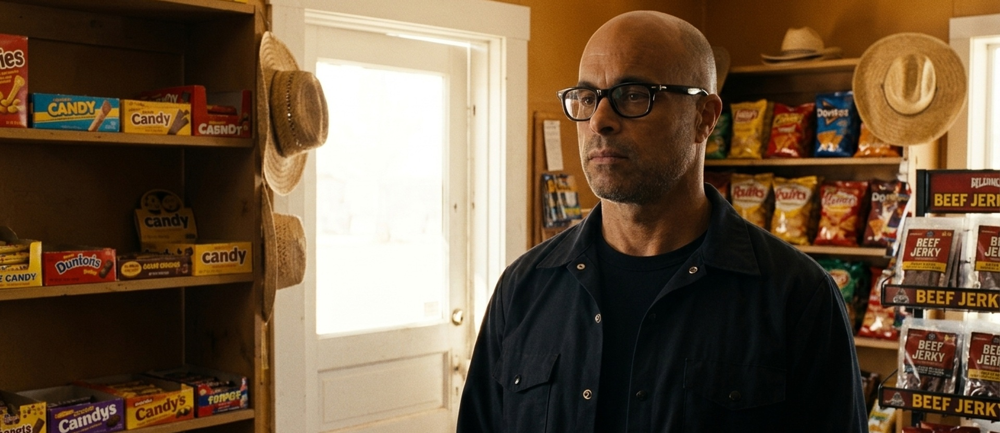
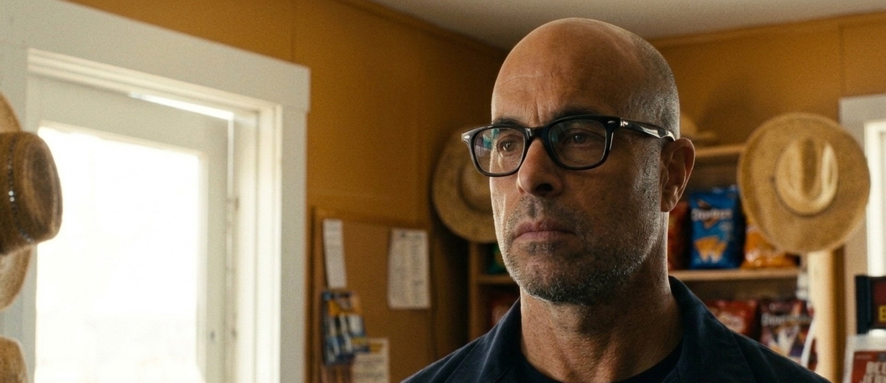
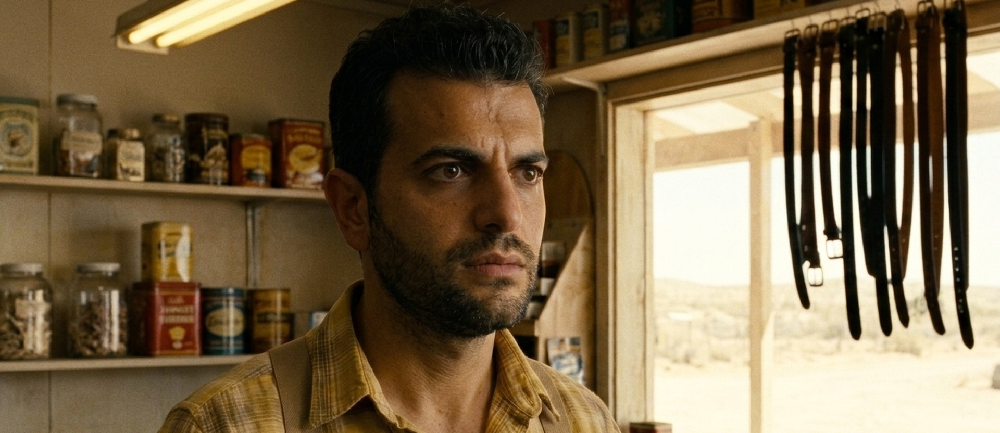
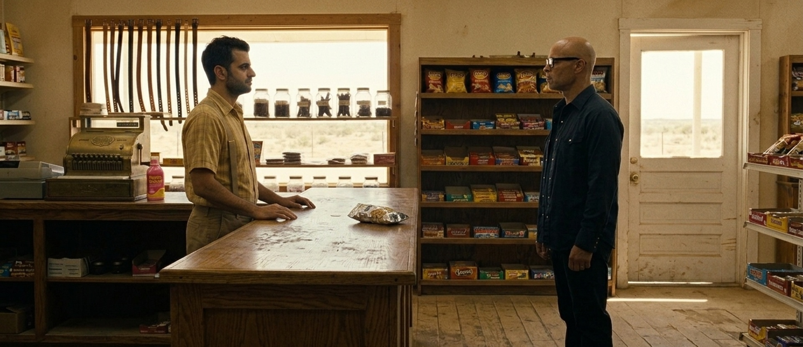
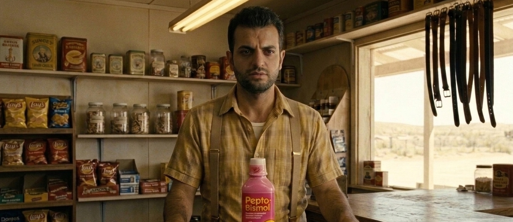
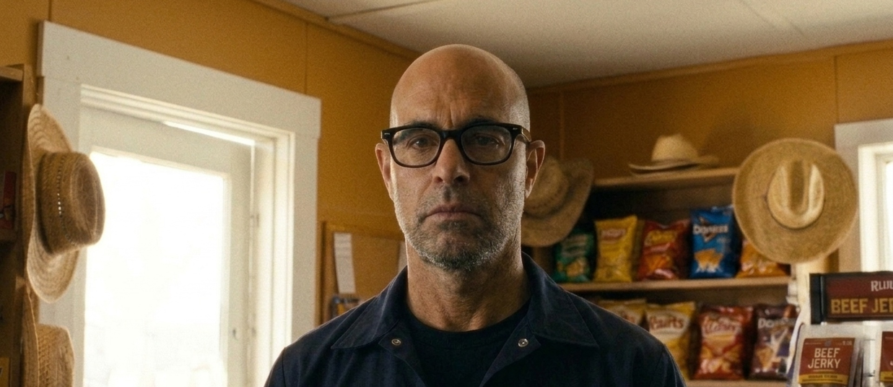

1980 Coen Brothers West Texas Texaco · Tight 2-Person v2.8: Damon & Zach (Zero Crowd) · Ingredient Prep: YouTube 1980 Coin-Toss Reference Analysis + 2-Person Gold-Master 21:9 Keyframes + Continuous 2-Act Lyria 3.5 Desert Tension Score · Render Time: 20/20 Verified Hybrid Render (18 InfiniteTalk + 2 LTX-2.5 Dev · Hostile QA PASS)
Original movie frames extracted directly from the scene to match camera angles, lenses, lighting contrast, and color palette.
Every locked 21:9 keyframe anchor, dialogue line, and motion directive queued for rendering.

NC2_01 · fx (3.7s)
Keyframe: nc2_master_wide.jpg
Line: ""
Prompt: Photorealistic 1980 35mm gritty West Texas gas-station thriller matching the starting frame. Bleached dusty afternoon desert sunlight streaming past the glass window contrasted with warm store fluorescent ceiling light. Set context: Gritty 1980 Roger Deakins 35mm West Texas Texaco general store interior at sun-bleached midday; Zach (brown-bearded gas-station clerk in faded yellow-ochre plaid short-sleeve button-up shirt over white crew tee and tan suspenders) stands on left behind scarred oak checkout counter with sunlit cracked-earth desert plains in the wide glass window behind him and vintage jerky jars beside an old brass cash register; Damon (bald Black man with rectangular black-rimmed glasses and short trimmed beard, dressed in dark navy snap-front work jacket over black cotton tee) stands on right across the counter beside a crinkled foil cashew bag and a single silver quarter on the wood grain; quiet empty rural general store interior with only the two men. Zach shifts his weight gently behind the oak counter, blinks naturally, and glances politely toward Damon, while Damon subtly tilts his chin and blinks calmly across the silver quarter and foil cashew bag as sunlit desert dust motes drift slowly across the air. Use a steady locked-off cinema camera mounted on a heavy studio tripod with grounded Roger Deakins composition. Crisp 35mm film grain and authentic human skin texture.

NC2_02 · zach (infinitetalk)
Keyframe: nc2_zach_ots.jpg
Line: "Cash or pump two, mister? Fair warning though, that roller-grill brisket taco been spinning since Tuesday morning... y'all fixin' to get rain out west?"
Prompt: Photorealistic 1980 35mm gritty West Texas gas-station thriller matching the starting frame. Bleached sunlit desert window and vintage store fluorescent mix lighting. Set context: Shallow f/2.2 35mm OTS past Damon's dark navy work-jacket shoulder in foreground right onto nervous Zach on left behind the oak counter framed against sunlit West Texas desert glass. Use a steady locked-off cinema camera mounted on a heavy studio tripod with grounded Roger Deakins composition. Exact face, glasses, hair, wardrobe, jars, register, quarter, and Pepto bottle preserved from the starting frame. ONLY the brown-haired brown-bearded man on the left side wearing a faded yellow-ochre plaid short-sleeve button-up shirt over a white tee with tan suspenders actively speaks with natural expressive jaw and lip articulation synced cleanly to the dialogue: "Cash or pump two, mister? Fair warning though, that roller-grill brisket taco been spinning since Tuesday morning... y'all fixin' to get rain out west?", leaning politely over the oak counter with friendly West Texas curiosity, natural brow lift, and relaxed easy cadence, finishing with lips closing calmly in deadpan gravity. The blurred foreground listener remains silent with lips comfortably sealed. Real human skin pores, subtle shoulder breathing, authentic eye blinks, 1980s 35mm film grain.

NC2_03 · damon (infinitetalk)
Keyframe: nc2_damon_ots.jpg
Line: "Two forty-nine for the cashews. Why did you ask about the brisket taco? It's none of your business what I ate before my morning Aquabike ride."
Prompt: Photorealistic 1980 35mm gritty West Texas gas-station thriller matching the starting frame. Bleached sunlit desert window and vintage store fluorescent mix lighting. Set context: Shallow f/2.2 35mm OTS past Zach's yellow-ochre plaid shoulder & suspender strap in foreground left onto ice-cold deadpan Damon on right framed against sunlit white store doorway and dusty snack shelves. Use a steady locked-off cinema camera mounted on a heavy studio tripod with grounded Roger Deakins composition. Exact face, glasses, hair, wardrobe, jars, register, quarter, and Pepto bottle preserved from the starting frame. ONLY the bald Black man on the right side wearing black-rimmed rectangular glasses, a dark navy snap-front work jacket over a black crew tee, and short dark trimmed beard actively speaks with natural expressive jaw and lip articulation synced cleanly to the dialogue: "Two forty-nine for the cashews. Why did you ask about the brisket taco? It's none of your business what I ate before my morning Aquabike ride.", holding ice-cold deadpan authority with slight deliberate head tilt toward the counter, unhurried blinks, and steady gaze, finishing with lips closing calmly in deadpan gravity. The blurred foreground listener remains silent with lips comfortably sealed. Real human skin pores, subtle shoulder breathing, authentic eye blinks, 1980s 35mm film grain.

NC2_04 · zach (infinitetalk)
Keyframe: nc2_zach_mcu.jpg
Line: "Whoa, hey, I didn't mean nothing by it, man. You just grabbed three Imodium packs and two wet naps, so I figured maybe the brisket got you."
Prompt: Photorealistic 1980 35mm gritty West Texas gas-station thriller matching the starting frame. Bleached sunlit desert window and vintage store fluorescent mix lighting. Set context: Gritty Deakins MCU of bearded Zach framed left-of-center behind the scratched wooden counter beside jerky jars and brass cash register edge under harsh overhead fluorescent and window key light. Use subtle organic 35mm handheld camera breathing with gentle operator micro-movements while maintaining framing distance. Exact face, glasses, hair, wardrobe, jars, register, quarter, and Pepto bottle preserved from the starting frame. ONLY the brown-haired brown-bearded man on the left side wearing a faded yellow-ochre plaid short-sleeve button-up shirt over a white tee with tan suspenders actively speaks with natural expressive jaw and lip articulation synced cleanly to the dialogue: "Whoa, hey, I didn't mean nothing by it, man. You just grabbed three Imodium packs and two wet naps, so I figured maybe the brisket got you.", raising eyebrows awkwardly with defensive shoulder shrug, quick earnest explanation, and expressive jaw movement, finishing with lips closing calmly in deadpan gravity. Real human skin pores, subtle shoulder breathing, authentic eye blinks, 1980s 35mm film grain.

NC2_05 · damon (infinitetalk)
Keyframe: nc2_damon_mcu.jpg
Line: "What time do you close this station? Wait... did you just assume an expired gas-station taco can rattle my core?"
Prompt: Photorealistic 1980 35mm gritty West Texas gas-station thriller matching the starting frame. Bleached sunlit desert window and vintage store fluorescent mix lighting. Set context: Gritty Deakins MCU of Damon framed right-of-center in dark work jacket against sunlit white paneled door and dusty Texaco pegboard snacks, eyes unwavering across the counter. Use a steady locked-off cinema camera mounted on a heavy studio tripod with grounded Roger Deakins composition. Exact face, glasses, hair, wardrobe, jars, register, quarter, and Pepto bottle preserved from the starting frame. ONLY the bald Black man on the right side wearing black-rimmed rectangular glasses, a dark navy snap-front work jacket over a black crew tee, and short dark trimmed beard actively speaks with natural expressive jaw and lip articulation synced cleanly to the dialogue: "What time do you close this station? Wait... did you just assume an expired gas-station taco can rattle my core?", shifting his shoulders subtly with quiet menacing poise, tilting his head calmly on stressed accusations, natural eye blinks, and expressive measured jaw movement, finishing with lips closing calmly in deadpan gravity. Real human skin pores, subtle shoulder breathing, authentic eye blinks, 1980s 35mm film grain.
NC2_06 · zach (infinitetalk)
Keyframe: nc2_zach_ots.jpg
Line: "We close at six, round suppertime. Listen, dude, you're sweating straight through a heavy denim shirt at sixty-eight degrees. Take the Pepto."
Prompt: Photorealistic 1980 35mm gritty West Texas gas-station thriller matching the starting frame. Bleached sunlit desert window and vintage store fluorescent mix lighting. Set context: Shallow f/2.2 35mm OTS past Damon's dark navy work-jacket shoulder in foreground right onto nervous Zach on left behind the oak counter framed against sunlit West Texas desert glass. Use a steady locked-off cinema camera mounted on a heavy studio tripod with grounded Roger Deakins composition. Exact face, glasses, hair, wardrobe, jars, register, quarter, and Pepto bottle preserved from the starting frame. ONLY the brown-haired brown-bearded man on the left side wearing a faded yellow-ochre plaid short-sleeve button-up shirt over a white tee with tan suspenders actively speaks with natural expressive jaw and lip articulation synced cleanly to the dialogue: "We close at six, round suppertime. Listen, dude, you're sweating straight through a heavy denim shirt at sixty-eight degrees. Take the Pepto.", holding earnest worried brow furrows, tense flat unamused mouth, and anxious steady eye contact across the oak counter, finishing with lips closing calmly in deadpan gravity. The blurred foreground listener remains silent with lips comfortably sealed. Real human skin pores, subtle shoulder breathing, authentic eye blinks, 1980s 35mm film grain.
NC2_07 · damon (infinitetalk)
Keyframe: nc2_damon_ots.jpg
Line: "You see this 1958 quarter? It's been traveling twenty-two years to get across this counter... right beside three warm brisket tortillas."
Prompt: Photorealistic 1980 35mm gritty West Texas gas-station thriller matching the starting frame. Bleached sunlit desert window and vintage store fluorescent mix lighting. Set context: Shallow f/2.2 35mm OTS past Zach's yellow-ochre plaid shoulder & suspender strap in foreground left onto ice-cold deadpan Damon on right framed against sunlit white store doorway and dusty snack shelves. Use a steady locked-off cinema camera mounted on a heavy studio tripod with grounded Roger Deakins composition. Exact face, glasses, hair, wardrobe, jars, register, quarter, and Pepto bottle preserved from the starting frame. ONLY the bald Black man on the right side wearing black-rimmed rectangular glasses, a dark navy snap-front work jacket over a black crew tee, and short dark trimmed beard actively speaks with natural expressive jaw and lip articulation synced cleanly to the dialogue: "You see this 1958 quarter? It's been traveling twenty-two years to get across this counter... right beside three warm brisket tortillas.", tilting his chin down slightly toward the silver quarter on the wood grain, speaking in low deliberate hypnotic cadence, finishing with lips closing calmly in deadpan gravity. The blurred foreground listener remains silent with lips comfortably sealed. Real human skin pores, subtle shoulder breathing, authentic eye blinks, 1980s 35mm film grain.
NC2_08 · zach (infinitetalk)
Keyframe: nc2_zach_mcu.jpg
Line: "Look, man, your stomach just made a sound like a wet carburetor. You don't gotta flip coins—the bathroom key is hanging right next to the jerky."
Prompt: Photorealistic 1980 35mm gritty West Texas gas-station thriller matching the starting frame. Bleached sunlit desert window and vintage store fluorescent mix lighting. Set context: Gritty Deakins MCU of bearded Zach framed left-of-center behind the scratched wooden counter beside jerky jars and brass cash register edge under harsh overhead fluorescent and window key light. Use a steady locked-off cinema camera mounted on a heavy studio tripod with grounded Roger Deakins composition. Exact face, glasses, hair, wardrobe, jars, register, quarter, and Pepto bottle preserved from the starting frame. ONLY the brown-haired brown-bearded man on the left side wearing a faded yellow-ochre plaid short-sleeve button-up shirt over a white tee with tan suspenders actively speaks with natural expressive jaw and lip articulation synced cleanly to the dialogue: "Look, man, your stomach just made a sound like a wet carburetor. You don't gotta flip coins—the bathroom key is hanging right next to the jerky.", leaning back uneasily behind the register with widening worried eyes, nervous swallows, and pleading gesture toward the jerky rack, finishing with lips closing calmly in deadpan gravity. Real human skin pores, subtle shoulder breathing, authentic eye blinks, 1980s 35mm film grain.

NC2_09 · damon (infinitetalk)
Keyframe: nc2_damon_cu.jpg
Line: "What's the most you ever lost in an Aquabike age-group transition? If you call heads, I walk calmly out that door to my bike rack."
Prompt: Photorealistic 1980 35mm gritty West Texas gas-station thriller matching the starting frame. Bleached sunlit desert window and vintage store fluorescent mix lighting. Set context: Tight intense 35mm CU of Damon framed right in stark half-shadow beneath overhead store light, razor-cold focus fixed forward. Use a steady locked-off cinema camera mounted on a heavy studio tripod with grounded Roger Deakins composition. Exact face, glasses, hair, wardrobe, jars, register, quarter, and Pepto bottle preserved from the starting frame. ONLY the bald Black man on the right side wearing black-rimmed rectangular glasses, a dark navy snap-front work jacket over a black crew tee, and short dark trimmed beard actively speaks with natural expressive jaw and lip articulation synced cleanly to the dialogue: "What's the most you ever lost in an Aquabike age-group transition? If you call heads, I walk calmly out that door to my bike rack.", holding unblinking flint-cold predator focus under harsh fluorescent light, delivering measured low-toned menace with calm jaw control, finishing with lips closing calmly in deadpan gravity. Real human skin pores, subtle shoulder breathing, authentic eye blinks, 1980s 35mm film grain.

NC2_10 · zach (infinitetalk)
Keyframe: nc2_zach_cu.jpg
Line: "Wait a second... what happens if I call tails?! I ain't mopping aisle four on a Friday afternoon, friendo!"
Prompt: Photorealistic 1980 35mm gritty West Texas gas-station thriller matching the starting frame. Bleached sunlit desert window and vintage store fluorescent mix lighting. Set context: Tight intense 35mm CU of Zach framed left, forehead beaded with nervous West Texas heat sweat, staring helplessly down toward the counter coin. Use subtle organic 35mm handheld camera breathing with gentle operator micro-movements while maintaining framing distance. Exact face, glasses, hair, wardrobe, jars, register, quarter, and Pepto bottle preserved from the starting frame. ONLY the brown-haired brown-bearded man on the left side wearing a faded yellow-ochre plaid short-sleeve button-up shirt over a white tee with tan suspenders actively speaks with natural expressive jaw and lip articulation synced cleanly to the dialogue: "Wait a second... what happens if I call tails?! I ain't mopping aisle four on a Friday afternoon, friendo!", tensing up with panicked incredulous eyebrow raise, leaning forward slightly in genuine disbelief with brisk articulate phrasing, finishing with lips closing calmly in deadpan gravity. Real human skin pores, subtle shoulder breathing, authentic eye blinks, 1980s 35mm film grain.
NC2_11 · damon (infinitetalk)
Keyframe: nc2_damon_ots.jpg
Line: "I can't call it for you. Wouldn't be fair. That second brisket taco was already riding shotgun in my lower tract when I pulled up to pump two."
Prompt: Photorealistic 1980 35mm gritty West Texas gas-station thriller matching the starting frame. Bleached sunlit desert window and vintage store fluorescent mix lighting. Set context: Shallow f/2.2 35mm OTS past Zach's yellow-ochre plaid shoulder & suspender strap in foreground left onto ice-cold deadpan Damon on right framed against sunlit white store doorway and dusty snack shelves. Use a steady locked-off cinema camera mounted on a heavy studio tripod with grounded Roger Deakins composition. Exact face, glasses, hair, wardrobe, jars, register, quarter, and Pepto bottle preserved from the starting frame. ONLY the bald Black man on the right side wearing black-rimmed rectangular glasses, a dark navy snap-front work jacket over a black crew tee, and short dark trimmed beard actively speaks with natural expressive jaw and lip articulation synced cleanly to the dialogue: "I can't call it for you. Wouldn't be fair. That second brisket taco was already riding shotgun in my lower tract when I pulled up to pump two.", holding grave philosophical coldness past Zach's shoulder, shifting weight subtly with slow measured head emphasis, finishing with lips closing calmly in deadpan gravity. The blurred foreground listener remains silent with lips comfortably sealed. Real human skin pores, subtle shoulder breathing, authentic eye blinks, 1980s 35mm film grain.
NC2_12 · zach (infinitetalk)
Keyframe: nc2_zach_cu.jpg
Line: "Why am I betting on YOUR digestive system?! You didn't even open the cashews yet—just grab the pink bottle on my counter!"
Prompt: Photorealistic 1980 35mm gritty West Texas gas-station thriller matching the starting frame. Bleached sunlit desert window and vintage store fluorescent mix lighting. Set context: Tight intense 35mm CU of Zach framed left, forehead beaded with nervous West Texas heat sweat, staring helplessly down toward the counter coin. Use a steady locked-off cinema camera mounted on a heavy studio tripod with grounded Roger Deakins composition. Exact face, glasses, hair, wardrobe, jars, register, quarter, and Pepto bottle preserved from the starting frame. ONLY the brown-haired brown-bearded man on the left side wearing a faded yellow-ochre plaid short-sleeve button-up shirt over a white tee with tan suspenders actively speaks with natural expressive jaw and lip articulation synced cleanly to the dialogue: "Why am I betting on YOUR digestive system?! You didn't even open the cashews yet—just grab the pink bottle on my counter!", glancing down at the counter in exasperated disbelief with tight stressed brow, urging frantically yet honestly, finishing with lips closing calmly in deadpan gravity. Real human skin pores, subtle shoulder breathing, authentic eye blinks, 1980s 35mm film grain.
NC2_13 · damon (infinitetalk)
Keyframe: nc2_damon_cu.jpg
Line: "No medicine. Everything in my race nutrition is weighed to the gram. Call it, friend."
Prompt: Photorealistic 1980 35mm gritty West Texas gas-station thriller matching the starting frame. Bleached sunlit desert window and vintage store fluorescent mix lighting. Set context: Tight intense 35mm CU of Damon framed right in stark half-shadow beneath overhead store light, razor-cold focus fixed forward. Use a steady locked-off cinema camera mounted on a heavy studio tripod with grounded Roger Deakins composition. Exact face, glasses, hair, wardrobe, jars, register, quarter, and Pepto bottle preserved from the starting frame. ONLY the bald Black man on the right side wearing black-rimmed rectangular glasses, a dark navy snap-front work jacket over a black crew tee, and short dark trimmed beard actively speaks with natural expressive jaw and lip articulation synced cleanly to the dialogue: "No medicine. Everything in my race nutrition is weighed to the gram. Call it, friend.", maintaining flint-cold solemn authority with flat downward-set unamused lips, heavy serious brow, minimal decisive chin dip, and piercing unamused stare, finishing with lips closing calmly in deadpan gravity. Real human skin pores, subtle shoulder breathing, authentic eye blinks, 1980s 35mm film grain.
NC2_14 · zach (infinitetalk)
Keyframe: nc2_zach_cu.jpg
Line: "Alright... fine! Heads then! Call it heads, lock it in, and take three giant steps backward away from that magazine rack!"
Prompt: Photorealistic 1980 35mm gritty West Texas gas-station thriller matching the starting frame. Bleached sunlit desert window and vintage store fluorescent mix lighting. Set context: Tight intense 35mm CU of Zach framed left, forehead beaded with nervous West Texas heat sweat, staring helplessly down toward the counter coin. Use subtle organic 35mm handheld camera breathing with gentle operator micro-movements while maintaining framing distance. Exact face, glasses, hair, wardrobe, jars, register, quarter, and Pepto bottle preserved from the starting frame. ONLY the brown-haired brown-bearded man on the left side wearing a faded yellow-ochre plaid short-sleeve button-up shirt over a white tee with tan suspenders actively speaks with natural expressive jaw and lip articulation synced cleanly to the dialogue: "Alright... fine! Heads then! Call it heads, lock it in, and take three giant steps backward away from that magazine rack!", exhaling nervously, squinting in sudden desperate surrender with brisk animated brow and urgent final warning, finishing with lips closing calmly in deadpan gravity. Real human skin pores, subtle shoulder breathing, authentic eye blinks, 1980s 35mm film grain.
NC2_15 · damon (infinitetalk)
Keyframe: nc2_damon_cu.jpg
Line: "Well done. You called heads cleanly... Unfortunately, the quarter landed tails. Keep the change on the receipt."
Prompt: Photorealistic 1980 35mm gritty West Texas gas-station thriller matching the starting frame. Bleached sunlit desert window and vintage store fluorescent mix lighting. Set context: Tight intense 35mm CU of Damon framed right in stark half-shadow beneath overhead store light, razor-cold focus fixed forward. Use a smooth measured linear cinema push-in on dolly rails deepening psychological dread. Exact face, glasses, hair, wardrobe, jars, register, quarter, and Pepto bottle preserved from the starting frame. ONLY the bald Black man on the right side wearing black-rimmed rectangular glasses, a dark navy snap-front work jacket over a black crew tee, and short dark trimmed beard actively speaks with natural expressive jaw and lip articulation synced cleanly to the dialogue: "Well done. You called heads cleanly... Unfortunately, the quarter landed tails. Keep the change on the receipt.", holding cold icy direct stare straight ahead under the slow dolly push with flat stoic poise and slight deliberate chin lift at the punchline, finishing with lips closing calmly in deadpan gravity. Real human skin pores, subtle shoulder breathing, authentic eye blinks, 1980s 35mm film grain.
NC2_16 · zach (infinitetalk)
Keyframe: nc2_zach_cu.jpg
Line: "Hold on... you got three seconds on that gasket, man! What is happening under your counter right now?!"
Prompt: Photorealistic 1980 35mm gritty West Texas gas-station thriller matching the starting frame. Bleached sunlit desert window and vintage store fluorescent mix lighting. Set context: Tight intense 35mm CU of Zach framed left, forehead beaded with nervous West Texas heat sweat, staring helplessly down toward the counter coin. Use a steady locked-off cinema camera mounted on a heavy studio tripod with grounded Roger Deakins composition. Exact face, glasses, hair, wardrobe, jars, register, quarter, and Pepto bottle preserved from the starting frame. ONLY the brown-haired brown-bearded man on the left side wearing a faded yellow-ochre plaid short-sleeve button-up shirt over a white tee with tan suspenders actively speaks with natural expressive jaw and lip articulation synced cleanly to the dialogue: "Hold on... you got three seconds on that gasket, man! What is happening under your counter right now?!", widening eyes in horrified awe, leaning forward cautiously over the wood counter with breathless urgent articulation, finishing with lips closing calmly in deadpan gravity. Real human skin pores, subtle shoulder breathing, authentic eye blinks, 1980s 35mm film grain.
NC2_17 · damon (infinitetalk)
Keyframe: nc2_damon_cu.jpg
Line: "If the rule I followed brought me to this... of what use was the taco?"
Prompt: Photorealistic 1980 35mm gritty West Texas gas-station thriller matching the starting frame. Bleached sunlit desert window and vintage store fluorescent mix lighting. Set context: Tight intense 35mm CU of Damon framed right in stark half-shadow beneath overhead store light, razor-cold focus fixed forward. Use a steady locked-off cinema camera mounted on a heavy studio tripod with grounded Roger Deakins composition. Exact face, glasses, hair, wardrobe, jars, register, quarter, and Pepto bottle preserved from the starting frame. ONLY the bald Black man on the right side wearing black-rimmed rectangular glasses, a dark navy snap-front work jacket over a black crew tee, and short dark trimmed beard actively speaks with natural expressive jaw and lip articulation synced cleanly to the dialogue: "If the rule I followed brought me to this... of what use was the taco?", holding eerie calm fatalistic resolve right before impact, faint blinking beat and quiet deadpan closure, finishing with lips closing calmly in deadpan gravity. Real human skin pores, subtle shoulder breathing, authentic eye blinks, 1980s 35mm film grain.

NC2_18 · fx (4.0s)
Keyframe: nc2_climax_start.jpg
Line: ""
Prompt: Photorealistic 1980 35mm gritty West Texas thriller practical-FX shot matching the starting frame and ending frame. Frame 1 opens cleanly across the spotless, dry scarred oak Texaco checkout counter with Zach on left behind the register and Damon on right in his dark navy work jacket and black-rimmed glasses standing over clean sunlit dry floorboards. Damon keeps a stone-cold stoic poker face above the counter as a catastrophic high-pressure wave of thick, chunky, glossy, disgusting dark-brown liquid diarrhea blasts explosively backward from behind his black trousers across the clean sunlit floorboards, splashing dynamically onto the lower white store door and puddling naturally while Zach freezes in stunned shock. Use a steady locked-off cinema camera mounted on a heavy studio tripod with grounded Roger Deakins composition. Dynamic practical fluid splash physics, wet glossy sheen, crisp 35mm film grain.

NC2_19 · zach (infinitetalk)
Keyframe: nc2_zach_post.jpg
Line: "You... didn't even blink once. Keep the cashews, keep the twenty bucks, and please don't use my mop bucket on pump two."
Prompt: Photorealistic 1980 35mm gritty West Texas gas-station thriller matching the starting frame. Bleached sunlit desert window and vintage store fluorescent mix lighting. Set context: Derived from NC2_ZACH_MCU: pale shell-shocked Zach resting both hands flat on the oak counter beside an upright bright pink bottle of Pepto-Bismol. Use subtle organic 35mm handheld camera breathing with gentle operator micro-movements while maintaining framing distance. Exact face, glasses, hair, wardrobe, jars, register, quarter, and Pepto bottle preserved from the starting frame. ONLY the brown-haired brown-bearded man on the left side wearing a faded yellow-ochre plaid short-sleeve button-up shirt over a white tee with tan suspenders actively speaks with natural expressive jaw and lip articulation synced cleanly to the dialogue: "You... didn't even blink once. Keep the cashews, keep the twenty bucks, and please don't use my mop bucket on pump two.", resting both hands quietly flat on the oak counter beside the upright bright pink Pepto-Bismol bottle with pale stunned exhaustion, slow bewildered blinks, and hollow voice, finishing with lips closing calmly in deadpan gravity. Real human skin pores, subtle shoulder breathing, authentic eye blinks, 1980s 35mm film grain.

NC2_20 · damon (infinitetalk)
Keyframe: nc2_damon_post.jpg
Line: "Don't put that quarter in your pocket. Otherwise it gets washed in the sink like everything else. Call it."
Prompt: Photorealistic 1980 35mm gritty West Texas gas-station thriller matching the starting frame. Bleached sunlit desert window and vintage store fluorescent mix lighting. Set context: Derived from NC2_DAMON_CU: composed, stone-faced Damon with hands completely down out of frame holding cold parting gaze beside the sunlit store door. Use a steady locked-off cinema camera mounted on a heavy studio tripod with grounded Roger Deakins composition. Exact face, glasses, hair, wardrobe, jars, register, quarter, and Pepto bottle preserved from the starting frame. ONLY the bald Black man on the right side wearing black-rimmed rectangular glasses, a dark navy snap-front work jacket over a black crew tee, and short dark trimmed beard actively speaks with natural expressive jaw and lip articulation synced cleanly to the dialogue: "Don't put that quarter in your pocket. Otherwise it gets washed in the sink like everything else. Call it.", keeping both hands completely down out of view with cold stony stoic composure, steady piercing gaze behind black-rimmed glasses, subtle calm head tilt, and crisp flat deadpan lip closure, finishing with lips closing calmly in deadpan gravity. Real human skin pores, subtle shoulder breathing, authentic eye blinks, 1980s 35mm film grain.